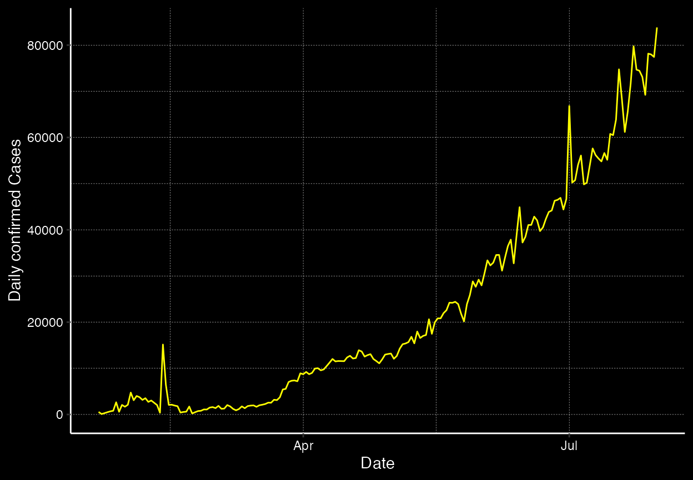

shiny_app.Rmdlibrary(CoronaShiny)
This package contains the shiny application and functions exploring the current state of coronavirus as at 31 July 2020.
The main functions in this package includes:
Type and Continent on the y-axis.This package also contains the following data sets:
Below displays a sample of both data sets:
library(tibble) corona_cont #> # A tibble: 2,880 x 4 #> date continent type cases #> <date> <chr> <chr> <int> #> 1 2020-01-22 Africa confirmed 0 #> 2 2020-01-22 Africa death 0 #> 3 2020-01-22 Africa recovered 0 #> 4 2020-01-22 Americas confirmed 1 #> 5 2020-01-22 Americas death 0 #> 6 2020-01-22 Americas recovered 0 #> 7 2020-01-22 Asia confirmed 554 #> 8 2020-01-22 Asia death 17 #> 9 2020-01-22 Asia recovered 28 #> 10 2020-01-22 Europe confirmed 0 #> # … with 2,870 more rows
coronavirus_july20 #> # A tibble: 188 x 5 #> Country Continent `Total Confirmed` `Total Deaths` `Total Recovered` #> <chr> <chr> <dbl> <dbl> <dbl> #> 1 US Americas 4562038 153314 1438160 #> 2 Brazil Americas 2662485 92475 2008854 #> 3 India Asia 1695988 36511 1094374 #> 4 Russia Europe 838461 13939 637217 #> 5 South Africa Africa 493183 8005 326171 #> 6 Mexico Americas 424637 46688 327115 #> 7 Peru Americas 407492 19021 283915 #> 8 Chile Americas 355667 9457 328327 #> 9 United Kingdom Europe 304793 46204 1439 #> 10 Iran Asia 304204 16766 263519 #> # … with 178 more rows
Below displays an example cumplot for confirmed cases in Asia
cumplot("confirmed", "Asia")

Below displays an example use of the selectInput01 function to select Type as the select input variable from the coroan_cont dataset.
selectInput01("type", corona_cont$type)